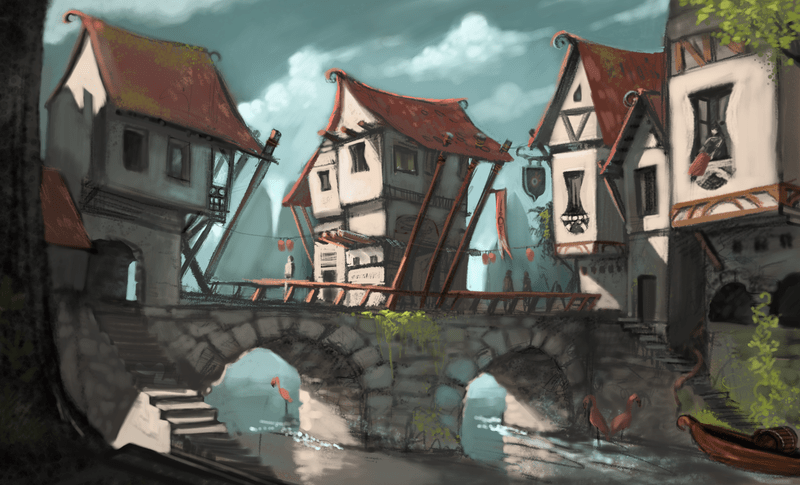

Rivvenastorp

The village amongst the hills of the silent plains, Home to the highestest population of gnomes in Avyngäard, all gnomes are welcome in our home. Except Svirfneblin. Those guys are weird.
Our claim to fame is our amazingest Tinkerers Program. At a young age, all gnomes are able to apply to our Tinkerer Academy, known as the Zimzam Academy Of Clockwork. The children are taught all about clockwork, mathmatics, and more.
Our most famousest graduate is none other than Zimzamkatan, who the school was renamed after. This world-renowned gnome has dozens of inventions that have changed the world as we know it, such as torches that produce light without fire, trams to cross the Storm's Rage Mountains, and more.
Zimzamkatan, now old even for a gnome, is the most famousest gnome in history. When he was young, he started life attending the Tinkerer Academy and graduated with the highestest honors. He is known for his contributions to Avyngäard and his hand in helping the adventurers who stopped the necromancer. He is even more famouser than Willum, the gnome who was able to stop the dead from destroying the continent.
Zimzam has been known to take on apprentices but the only one who has been able to hold a light to Zimzam is his current apprentice, Tifaphimila, who is the only gnome to graduate with the same honors as Zimzam. We look forward to watching her take Zimzam's legacy when he moves on.